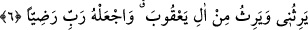

demektir. Çünkü erkek ve kadınlardan çocuğu olmayan kimselere “âkır (kısır)” denir.
Hz. Zekeriyya’nın hanımı o zaman, Kâşifî’nin tercih ettiği görüşe göre doksan sekiz
yaşındaydı.
“Tarafından bana bir veli (oğul) ver.” Yâni, normal sebepler vasıtasıyla değil,
yaratma yoluyla kudretinden ve geniş lütfundan bana bir oğul ver. Çünkü ben ve
hanımım bu halimizle çocuk dünyaya getirmeye elverişli değiliz. Âyette geçen “velî”,
“Benden sonra din işini takip edecek ve yüklenecek soyumdan bir erkek çocuk”
demektir.
6. Ki o bana vâris olsun; Yakuboğulları’na da vâris olsun. Rabbim onu rızana lâyık
kıl!”
Devamla Hz. Zekeriyya, şöyle demiştir:
“Ki o bana vâris olsun; Yakuboğulları’na da vâris olsun.” Yani onu bana ilim, din
ve peygamberlik bakımından mirasçı yap. Çünkü peygamberler mal mîras bırakmazlar.
Nitekim Peygamber (a.s.) şöyle buyurmuştur: “Biz, Peygamberler topluluğu miras
bırakmayız, bıraktığımız sadakadır.” [5]
Eğer: “Burada “velî”, vârislikle nitelendirilmiş ama bu hususta ona icâbet
edilmemiştir. Çünkü, meşhur olduğu üzere Yahya (a.s.), Zekeriyya (a.s.)’dan önce vefat
etmiştir. Dolayısıyla önce ölenin sonra ölene mirasçı olması nasıl olur?” dersen, cevap
olarak derim ki: Her ne kadar peygamberler duâları kabul olunan kimseler iseler de,
üstün hikmetlere dayanan ilâhî irâde gereği bütün duâları kabul olunur, demek değildir.
Nitekim İbrahim (a.s.)’ın babası için yaptığı duâ ve Peygamberimiz (a.s.)’ın “Allah’tan
kimine kiminin hıncını tattırmamasını istedim, fakat bu bana verilmedi.”[6] şeklindeki
duâsı bunu gösterir. Burada da Zekeriyya (a.s.)’a Hz. Yahya’yı beğenilen bir peygamber
olarak vermesi, ama onu mirasçı yapmaması yüce Allâh’ın hükümlerindendir. Demek
ki, Hz. Zekeriyya’nın birincide duâsını kabul etmiş, ikincide ise etmemiştir.
Onun Yakuboğulları’na mirasçı olması, İbrahim oğlu İshâk (a.s.)’ın oğullarının
melikliğine mirasçı olmasıdır. Kişinin “âli”, akrabalık, arkadaşlık veya din birliği
sebebiyle işlerini kendisine havâle ettiği özel kimselerdir. Kelbî ve Mukâtil burada
Yakupoğulları’ndan maksadın, Süleyman (a.s.)’ın neslinden gelen Meryem’in babası
Mâsân’ın oğlu, İmrân’ın erkek kardeşi ve Yakub (a.s.) olduğunu söylemişlerdir. Yakub
(a.s.)’ın oğulları Zekeriyya (a.s.)’ın oğlu Yahya’nın dayıları idi. Kelbî’nin dediğine
göre, Mâsân’ın oğulları İsrailoğulları’nın reisleri ve kralları idi. Zekeriyya (a.s.) ise o
zaman hahamların reisi idi. O, oğlunun kendisinin hahamlığına, Mâsânoğulları’nın da
krallığına vâris olmasını istedi.
“Rabbim, onu rızana lâyık kıl!” Yani, söz ve davranış bakımından senin hoşnud